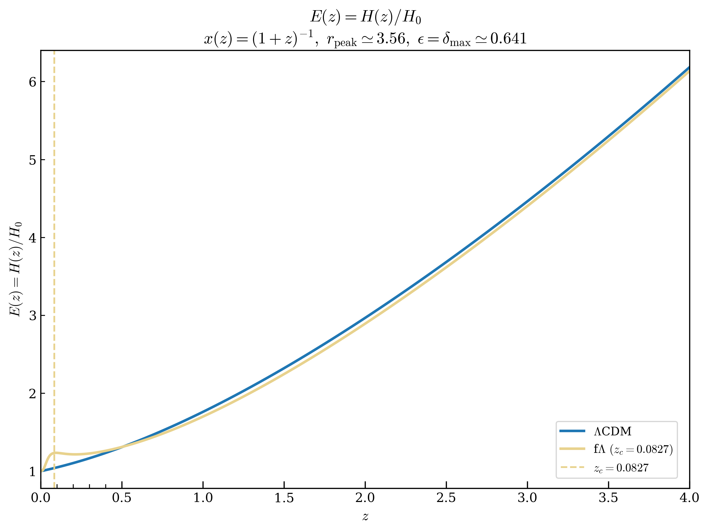
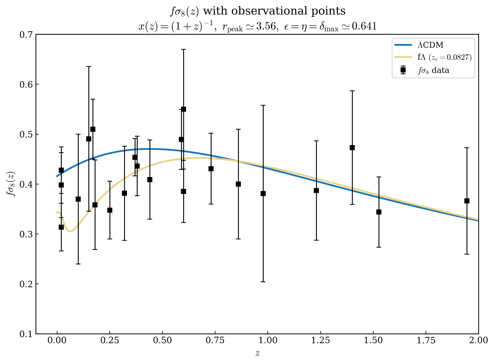

Misaki Kasai
2026 年 3 月 21 日
このページでは、もともと LaTeX で書かれた論文の
HTML 版（日本語原文）を提供します。
PDF 版では省略されている保存則の詳細や銀河回転曲線フィッティングは、ページ下部の Appendix C を参照してください。
Related Links:本モデルは、厳密解ではなく準解 \(\phi(r)\) を意図的に採用している。その理由は、厳密解を課すことで特性スケール \(r = R\) の物理的意義が消失し、空間のスケール応答という本質的な挙動を再現できなくなるためである。
仮に厳密解を強制すると、\(r = R\) というスケールは座標変換や対称性に基づく縮退によって吸収されてしまう可能性が高い。その場合、\(R\) は物理的に意味を持つスケールとしての地位を失い、冗長なパラメータとなることで、スケール依存の意味ある構造は記述されなくなる。
この準解の妥当性を検証するために、変分残差解析を実施した。その結果、極値条件の破れは局所的かつ制御されており、物理的に意味のある構造として現れることが確認された。この挙動は Fig. 1 に視覚的に示されている。
準解や変分残差は決して妥協や欠陥を意味しない。むしろこれらは、本構造の基盤そのものであり、スケール依存的な空間力学を実現する鍵である。
重要なのは、この準解が近似のために採用されたのではなく、有効 \(\Lambda\) 項 \(\Lambda_{\text{eff}}(r)\) を導出するうえでの構造的役割のために導入されたという点である。
なお、このことは、宇宙全体の構造や場の基本方程式そのものが準解であることを意味するものではない。
本研究の目的は、準解構造が、その他の部分が厳密解で記述される宇宙において、機能的に作用し得るかを検証することにある。
また、本論文における「対数型」という用語は、厳密な \(\log\) 関数式そのものを意味するのではなく、関数の形状が対数的であるという定性的特徴を指している。
本研究では、スカラー場に起因する空間のスケール応答的な幾何学的斥力効果をもたらす有効 \(\Lambda\) 項 \(\Lambda_{\text{eff}}\) を導出することで、Einstein 方程式の枠組みを重力理論から、斥力応答を基盤とした斥力応答型重力理論へと拡張する方法を提示する。
\(\Lambda_{\text{eff}}\) の効果は空間スケールに依存し、特に銀河スケールおよびブラックホール内部における重力の構造的性質そのものを再定義する役割を果たす可能性がある。
銀河回転曲線の外縁部にみられる平坦化と、ブラックホール特異点の回避という二つの観測的・理論的問題に対して、共通のスカラー場項 \(\Lambda_{\text{eff}}\) による統一的かつ定量的な解決を提示する。
近年の観測により、銀河の外縁部における恒星の回転速度が、重力理論（一般相対性理論）と通常のバリオン物質量から期待される値を大きく上回ることが明らかとなった。これはいわゆる「銀河回転曲線問題」であり、ダークマターの存在を前提としない限り、既存の重力理論では説明が困難であるとされてきた [Rubin, V. C., & Ford, W. K. (1970). Rotation of the Andromeda Nebula from a Spectroscopic Survey of Emission Regions. The Astrophysical Journal]; [Sofue, Y., & Rubin, V. (2001). Rotation Curves of Spiral Galaxies. Annual Review of Astronomy and Astrophysics]。さらに、ブラックホール内部における重力崩壊は、古典的には \(r \to 0\) 極限で特異点（無限の曲率）を生じることが知られており、これもまた一般相対性理論の構造的限界を示唆していると考えられている [Penrose, R. (1965). Gravitational Collapse and Space-Time Singularities. Physical Review Letters]。この「特異点問題」は、重力理論において量子補正または構造的修正の必要性を強く示唆する。
現代宇宙論の標準モデルである \(\Lambda\)CDM モデルは、宇宙マイクロ波背景放射（CMB）、バリオン音響振動（BAO）、Ia 型超新星などの観測と高精度に整合する成功を収めている [Planck Collaboration (2020). Planck 2018 Results. VI. Cosmological Parameters. Astronomy & Astrophysics]。
しかしその一方で、宇宙定数 \(\Lambda\) は静的・一様な定数として定義されており、空間構造やスケール依存性を含まないという制約をもつ。また、\(\Lambda\)CDM はダークマターやダークエネルギーといった「見えない成分」に依存しているが、これらの正体は未解明である。これらは理論的には補助項として振る舞い、物理的実在性の根拠が希薄であるという批判も根強い [Padmanabhan, T. (2003). Cosmological Constant – the Weight of the Vacuum. Physics Reports]。
本研究では、「重力＝引力（空間の歪み）」という視点を基本とする一般相対性理論とは対照的に、斥力応答を主語とする重力理論の構築を試みる。具体的には、スカラー場に由来する有効 \(\Lambda\) 項 \(\Lambda_{\mathrm{eff}}(r)\) を導出し、銀河スケールからブラックホール特異点スケールまでの重力構造を統一的に記述する枠組みを提案する。加えて、本理論では、幾何学的斥力応答を静的球対称のスカラー場ラグランジアンに基づいて構成し、後に幾何学スケール比 \(\dfrac{r}{R}\) を背景宇宙における時間発展の基礎とみなすことで、宇宙論へ接続することを目指す。
したがって本研究では、幾何学的な斥力応答構造を第一原理として採用する立場から、四次元時空および物質はその構造から副次的に生成されるものとみなし、共変性はそれらを局所的に記述するための手段として位置づける。なお、本研究は、Einstein 方程式における宇宙定数 \(\Lambda\) を、近似的に一定な背景スケールとして保持する立場を採る。このようにして、\(\Lambda\)CDM モデルの哲学的背景を保ちつつ、その構造的限界を乗り越える重力理論を構築することを目的とする。
このセクションでは、有効 \(\Lambda\) 項
\[ \Lambda_{\text{eff}}(r) = \frac{4r^2}{(R^2 + r^2)^2} \]が、球対称かつ静的なスカラー場に対して変分原理を適用することで構造的に導出されることを示す。
ここで、\(R\) は空間スケールにおける特性長（characteristic scale）であり、\(R\) および \(r\) は観測と突合されるまでは無次元量として扱われる。
本研究の中心原理は、幾何学的斥力応答の本質的構造を、特性スケール \(R\) を伴った半径方向の一次元構造として同定する点にある。
この立場に基づき、本理論では以下の基礎的な半径方向一次元の静的・球対称ラグランジアンを採用する：
\[ \mathcal{L}_\phi = -\frac{1}{2} \left( \frac{d\phi}{dr} \right)^2 - V(\phi(r)) \]ここで、\(V(\phi(r))\) はスカラー場ポテンシャルである。この半径方向一次元の定式化は、球対称かつ静的な構造において、スケール依存の幾何学的斥力応答を生成するための記述を与えるものである。
本研究では、半径方向の一次元構造を特徴づける背景関数として、\(x \equiv \dfrac{r}{R}\) を用いた基本的な対数プロファイル
\[ \ln(1+x^2) \]を考える。このとき、スカラー場は、スケール依存の幾何学的斥力応答構造を特徴づける形状関数として背景関数の半径勾配で与えられる：
\[ \phi(r)=\frac{d}{dr}\ln\!\left(1+\frac{r^2}{R^2}\right)=\frac{2r}{R^2+r^2} \]このとき、
\[ \phi(r)^2=\frac{4}{R^2}\cdot\frac{x^2}{(1+x^2)^2}, \,\, \phi(r)^4=\frac{4}{R^2}\cdot\frac{4}{R^2}\cdot\left(\frac{x^2}{(1+x^2)^2}\right)^2 \]であるから、対称性 \(\phi \leftrightarrow -\phi\) を担保する標準的な \(-\phi^2+\phi^4\) 型ポテンシャルにおいて、\(\phi^2\) 項と同一の \(R\)-階層に属する（前因子として \(\dfrac{4}{R^2}\) を 1 つだけもつ）高次項として \(\phi^4\) 項を同定すると、その係数は \(\dfrac{1}{4}R^2\) で与えられることがわかる。したがって、スカラー場 \(\phi(r)\) に対応するポテンシャルは以下のように展開される：
\[ \begin{aligned} V(\phi(r)) &=-\phi^2+\frac{1}{4}R^2\phi^4\\[1em] &= -\left(\frac{2r}{R^2+r^2}\right)^2 +\frac{1}{4}R^2\left(\frac{2r}{R^2+r^2}\right)^4\\[1em] &= \underbrace{-\frac{4r^2}{(R^2 + r^2)^2}}_{\text{主項}} +\underbrace{\frac{4R^2 r^4}{(R^2 + r^2)^4}}_{\text{第二項（補正項）}} \end{aligned} \]ここで、第二項は補正項として主要構造をわずかに変形するが、主項は明確に：
\[ \boxed{V(\phi(r)) \propto -\Lambda_{\mathrm{eff}}(r), \qquad \Lambda_{\mathrm{eff}}(r) \equiv \frac{4r^{2}}{(R^{2}+r^{2})^{2}}} \]特に \(r \ll R\) では第二項は主項に比べて十分に小さく、また \(r \gg R\) においても：
\[ \underbrace{\frac{r^2}{(R^2 + r^2)^2} \sim \frac{1}{r^2}}_{\text{主項}},\qquad\underbrace{\frac{r^4}{(R^2 + r^2)^4} \sim \frac{1}{r^4}}_{\text{第二項（補正項）}} \]となり、補正項の寄与は急速に減衰する。
さらに、中間スケールにあたる \(r = R\) においても、
\[ \underbrace{\frac{4R^2}{(2R^2)^2} = \frac{1}{R^2}}_{\text{主項}},\qquad\underbrace{\frac{4R^2 R^4}{(2R^2)^4} = \frac{1}{4R^2}}_{\text{第二項（補正項）}} \]より、補正項は主項の \(1/4\) にとどまる。
したがって、空間の全領域にわたって主項が支配的であることから、\(\Lambda_{\text{eff}}(r)\) はスカラー場ポテンシャル \(V(\phi(r))\) から直接かつ自然に導出されることが示される。
本セクションでは、セクション 4 で構成した有効 \(\Lambda\) 項 \(\Lambda_{\text{eff}}(r)\) から導かれるスカラー場 \(\phi(r)\) のラグランジアンが、変分原理（オイラー＝ラグランジュ方程式）に基づく極値条件を満たすかどうかを評価する。ここで、我々は特に、空間スケール \(r = R\) の近傍において極値条件が局所的に破れ始め、その破れが \(r \gg R\) の領域で急速に減衰することを期待する。
このような挙動は、採用された \(\phi(r)\) の構造から自然に予測されるものであり、特性スケール \(R\) が消えずに保持されている確認になると同時に、宇宙の加速膨張が極値条件の局所的な破れと密接に関係している可能性を示唆するためである。
なお、ここで議論される極値条件の破れは、保存則 \(\nabla^\mu T_{\mu\nu} = 0\) の破れを直接的に意味するものではないことに注意されたい。
セクション 4 より、スカラー場とそれに対応するポテンシャルは：
\[ \phi(r) = \frac{2r}{R^2 + r^2}, \qquad V(\phi(r)) = -\phi^2 + \frac{1}{4}R^2\phi^4 \]よって、静的・球対称のもとでのラグランジアンは：
\[ \mathcal{L}_\phi = -\frac{1}{2}\left(\frac{d\phi}{dr}\right)^2 - V(\phi(r)) = -\frac{1}{2}\left(\frac{d\phi}{dr}\right)^2 + \phi^2 - \frac{1}{4}R^2\phi^4 \]したがって、このラグランジアンから導出されるオイラー＝ラグランジュ方程式は以下のように与えられる：
\[ \frac{d^2\phi}{dr^2} = R^2 \phi^3 - 2\phi \]この条件のもとで、極値条件からのずれ（変分残差）は次のように定義される：
\[ \delta(r) \equiv \frac{d^2\phi}{dr^2} - \left( R^2 \phi^3 - 2\phi \right) \]スカラー場 \(\phi(r)\) をこの式に代入すると、変分残差は明示的に次の形で与えられる：
\[ \delta(r) = \left[\frac{4r(r^2 - 3R^2)}{(R^2 + r^2)^3}\right] - \left[\frac{8R^2 r^3}{(R^2 + r^2)^3} - \frac{4r}{R^2 + r^2}\right] \]この式に基づき、スカラー場 \(\phi(r)\) に対する変分残差 \(\delta(r)\) を数値的に評価した。その結果得られたプロットを Fig. 1 に示す。
Fig. 1 から、変分残差 \(\delta(r)\) は空間スケール \(r = R\) において局所的なずれを生じ、その直後 \(r > R\) にピークを迎え、以降急速に減衰していく様子が確認される。
この結果は、スカラー場が特に \(r = R\) を認識し、それに応答していること、また極値条件の破れが局所的かつ非瞬間的であることを示している。このような挙動は、持続的な加速膨張の性質とも整合的である。
解析の範囲は \(r \in [0.0001, 100]\) に設定した。この区間内における変分残差 \(\delta(r)\) の最大値は以下の通りである：
\[ \delta_{\text{max}} \approx 0.552 \quad \text{at} \quad r \approx 4.10 \]この残差の有意性を評価するため、極値条件に対する相対誤差を次のように定義する：
\[ \epsilon_\phi(r) \equiv \left| \frac{\delta(r)}{\phi(r)} \right| \]残差が最大となる点（\(r \approx 4.10\)）において、スカラー場の値は \(\phi(r) \approx 0.394\) であり、したがって：
\[ \epsilon_\phi \approx 1.40 \]同様に、特性スケール \(r = R = 2\) における相対誤差は以下の通りである：
\[ \epsilon_\phi(R) = \left| \frac{\delta(R)}{\phi(R)} \right| = 0.750 \quad (\delta(R) = 0.375,\ \phi(R) = 0.500) \]特性スケール \(r = R\) 付近において、相対誤差は極値条件の局所的な破れと見なせる範囲に収まっており、このときの値 \(\epsilon_\phi(R) = 0.750\) は、本関数が準解として妥当であることを裏付けている。
一方で、変分残差 \(\delta(r)\) は \(r \approx 4.10\) 付近で最大値を取り、このとき相対誤差はおよそ \(\epsilon_\phi \approx 1.40\) に達する。しかし、このスケールにおいては \(\phi(r)\) 自身が減衰して小さくなるため、分母が小さくなることで相対誤差が見かけ上過大評価される。
したがって、準解の妥当性を評価するうえでは、主に \(r = R\) 付近に注目するのがより適切である。
以上の評価に基づき、本研究で採用されたスカラー場 \(\phi(r)\) は、等方性により保証された特性スケール \(R\) を吸収してしまうような厳密解の代わりに、\(R\) を保持しながら変分原理に著しく反することのない準解として定式化され、同時に極値条件の局所的破れ \(\delta(r)\) は、スカラー場 \(\phi(r)\) 励起のための必要条件であることがわかる。
本論文では、準解 \(\phi(r)\) から構成された有効 \(\Lambda\) 項 \(\Lambda_{\text{eff}}(r)\) に基づく構造全体を、\(\Lambda_{\text{eff}}\) モデル（または fΛ理論）として以後参照する。
導出したスケール依存型の有効 \(\Lambda\) 項：
\[ \Lambda_{\text{eff}}(r) = \frac{4r^2}{(R^2 + r^2)^2} \]は、\(r = R\) において最大値をとり、その値は次のように与えられる：
\[ \Lambda_{\text{eff}}^{\text{max}} = \left. \Lambda_{\text{eff}}(r) \right|_{r=R} = \frac{4R^2}{(R^2 + R^2)^2} = \frac{4R^2}{4R^4} = \frac{1}{R^2} \]ここで、この最大値を観測されている宇宙定数：
\[ \Lambda \approx 10^{-52}\,\mathrm{m}^{-2} \]として同定すれば、
\[ R = \frac{1}{\sqrt{\Lambda}} \approx 10^{26}\,\mathrm{m} \]となり、これは宇宙論スケール \(\sim 10^{26}\,\mathrm{m}\) と一致する。
したがって、宇宙論スケールの特性スケールとして、\( R = 1/\sqrt{\Lambda} \equiv R_c \) が自然に定義される。
このことは、本研究で導出されたスカラー場由来の有効 \(\Lambda\) 項が、観測的宇宙定数と自然に整合する構造を持つことを意味しており、\(\Lambda_{\text{eff}}\) が宇宙論的斥力の実体として有力な候補であることを示している。
拡張 Einstein 方程式は、以下のとおり記述される：
\[ \Lambda_{\text{eff}}(r)\, g_{\mu\nu} + G_{\mu\nu} = \kappa\, T_{\mu\nu}^{(\text{matter})} \]\( r \ll R_c \) となる局所スケール（たとえば太陽系スケール）では、
\[ G_{\mu\nu} = \kappa\,T^{(\text{matter})}_{\mu\nu} \]となり、従来の Einstein 方程式へ自然に帰結する。
よって、水星の近日点移動や重力赤方偏移といった、Einstein 方程式によって精密に説明されてきた観測事実とも整合する。
また、有効 \(\Lambda\) 項 \(\Lambda_{\mathrm{eff}}(r)\) は次のように書き換えることができる：
\[ \Lambda_{\mathrm{eff}}(r) = \frac{1}{R^{2}}\,F\!\left(\frac{r}{R}\right),\qquad F(x)=\frac{4x^{2}}{(1+x^{2})^{2}},\quad x\equiv\frac{r}{R} \]ここで、先ほどの拡張 Einstein 方程式に Bianchi 恒等式を適用すると、幾何学–物質間のエネルギー交換（すなわち局所的な非保存）を表す交換流 \(J\) を明示的な形で定義することができる。静的かつ球対称な条件においては、半径方向のみが残るから、
\[ J_\nu \equiv \nabla^\mu T^{(\text{matter})}_{\mu\nu} = \frac{1}{\kappa}\,\partial_\nu\Lambda_{\mathrm{eff}}, \qquad J_r = \frac{1}{\kappa R^3}\frac{dF}{dx} \]すなわち、局所的な保存則は破れるが、半径方向および体積全体の流束は：
\[ \int_{0}^{\infty} J_r\,dr = 0, \qquad \Phi(r) = 4\pi r^2 J_r \ \Rightarrow\ \Phi(0) = \Phi(\infty) = 0 \]となり、幾何学–物質間のエネルギー交換は空間全体で厳密に釣り合い、大域的なエネルギー保存が保証される。
さらに、局所的非保存を表す交換流 \(J_r\) が無視できるほど小さくなるような宇宙論スケール \( r \sim R_c \sim 10^{26}\,\mathrm{m} \) では、
\[ \left|\frac{d\Lambda_{\mathrm{eff}}}{dr}\right| \sim 10^{-78}\,\mathrm{m^{-3}} \ \Rightarrow \ \Lambda_{\mathrm{eff}} \approx \text{const.} \]となり、Friedmann 方程式が自然に再現される：
\[ H^2 \equiv \left(\frac{\dot a}{a}\right)^2 = \frac{8\pi G}{3}\,\rho - \frac{k c^2}{a^2} + \frac{\Lambda c^2}{3}, \] \[ \frac{\ddot a}{a} = -\frac{4\pi G}{3}\!\left(\rho + \frac{3P}{c^2}\right) + \frac{\Lambda c^2}{3} \]銀河の中心部においては、バリオン成分が比較的密集しており、球対称かつ一様密度の近似モデルが適用可能である。このとき、半径 \(r\) 内に含まれる質量 \(M(r)\) は次のように表される：
\[ \rho = \text{const} \quad \Rightarrow \quad M(r) = \frac{4}{3} \pi r^3 \rho \]この質量分布により生じる重力ポテンシャルから、回転速度は次のように導かれる：
\[ v_{\text{grav}}^{2}(r) = \frac{G M(r)}{r} = \frac{G}{r} \left( \frac{4}{3} \pi r^{3} \rho \right) = \frac{4}{3} \pi G \rho\, r^{2} \] \[ \Downarrow \] \[ v_{\text{grav}} \propto r \]これは、銀河回転曲線の内側（中心近傍）における線形増加傾向と整合する。実際、観測的にも中心付近の回転速度は \(v \propto r\) に近い傾向を示しており、このモデルは銀河中心部における重力支配領域の良い近似となる。
一様密度モデルによる重力項が銀河中心部で支配的である一方、銀河外縁部における平坦な回転曲線を説明するには、それとは異なる力学的寄与が必要である。
本モデルでは、スカラー場 \(\phi(r)\) の空間構造から生み出されるスケール依存型の有効 \(\Lambda\) 項が、幾何学的な斥力を及ぼす。この効果は、以下の形式で回転速度に寄与する：
\[ v_{\text{rep}}^2(r) = v_0^2 \cdot \frac{2r^2}{R^2 + r^2} \]ここで：
観測に基づく代表値として \(v_0 \approx 200~\mathrm{km/s}\) を採用する。この構造は、中心部では寄与が小さく、\(r \to \infty\) で漸近的に一定値 \(v_{\mathrm{rep}} \to \sqrt{2}\,v_0\) に収束するため、回転速度の平坦化を自然に再現する。
本モデルにおける回転速度の重力的寄与と斥力的寄与は、互いに独立なエネルギー項と見なせる。したがって、観測される回転速度は次のようなエネルギーの二乗和として合成される：
\[ \begin{aligned} v_{\text{total}}^{2}(r) &= v_{\text{grav}}^{2}(r) + v_{\text{rep}}^{2}(r) \\[0.5em] &\Downarrow \\[0.5em] v_{\text{total}}(r) &= \sqrt{v_{\text{grav}}^{2}(r) + v_{\text{rep}}^{2}(r)} \end{aligned} \]この合成構造により、
すなわち、本構造は、ダークマターを仮定することなく銀河回転曲線の特徴を再現できることを示しており、\(\Lambda_{\text{eff}}\) の有効性を裏付ける。
特性速度スケール \(v_0\) は、セクション 6 の結果および \(\Lambda\)CDM モデルにおける真空エネルギー密度式に基づいて導出できる。
したがって、幾何学的有効斥力エネルギー密度は次のように与えられる（セクション 6 より、\(r = R\)（すなわち \(v_0\) の導出条件）において \(\Lambda_{\text{eff}} = \Lambda\) であるから、）：
\[ \rho_{\Lambda_{\text{eff}}}(R) = \rho_\Lambda = \frac{\Lambda c^2}{8\pi G} \approx 10^{-26} \, \text{kg/m}^3. \]この有効エネルギー密度を、半径 \(R \approx 1000\,\text{kpc} \approx 3.1 \times 10^{22}\,\text{m}\) の球対称領域にわたって積分すると、有効質量は以下のように求まる（セクション6より、\(10^{22}\,\text{m} \ll 10^{26}\,\text{m}\) であるため、\(\rho_{\Lambda_{\text{eff}}}(R)\) はこの範囲では一定とみなして積分できるから、）：
\[ M_\Lambda \approx \rho_\Lambda \cdot \frac{4}{3} \pi R^3 \approx 10^{42} \, \text{kg}. \]この有効質量に対応するエネルギーの一部が運動エネルギーに変換されるとすると、次の関係が得られる：
\[ E_{\mathrm{rot}} = \frac{1}{2} M_\Lambda v_0^2 \quad \Rightarrow \quad v_0 \approx 200\,\mathrm{km/s} \approx \sqrt{\frac{2E_{\mathrm{rot}}}{M_\Lambda}} \]したがって、特性速度スケール \(v_0 \approx 200\,\mathrm{km/s}\) は、\(\Lambda_{\text{eff}}\) モデルの枠組みの中で自然に導出される物理量であり、対応するエネルギー \(E_{\mathrm{rot}} \approx 2 \times 10^{52}\,\mathrm{J}\) は観測的に典型的なスケール \(E_{\mathrm{obs}} \sim 10^{52}\,\mathrm{J}\) と整合的である。
また、幾何学的な斥力エネルギー全体は \(E_\Lambda = M_\Lambda c^2 \approx 10^{59}\,\mathrm{J}\) と見積もられ、\(E_{\mathrm{rot}} \approx 2 \times 10^{52}\,\mathrm{J}\) はこれと比較して十分に小さく、エネルギー論的一貫性も保たれている。
これらの結果は、スカラー場から導出されたスケール依存項 \(\Lambda_{\text{eff}}(r)\) が、物理的に妥当な幾何学的斥力項として機能しうることを定量的に裏付けるものである。
使用した代表パラメータとプロット条件
以上の代表値を用い、先に導出した回転速度の合成式：
\[ v_{\text{total}}(r) = \sqrt{v_{\text{grav}}^2(r) + v_{\text{rep}}^2(r)}. \]に基づき、銀河スケールでの回転速度プロファイルを数値的にプロットしたものが Fig. 2 である。

ところが、Fig. 2 に示す数値シミュレーションの結果から明らかなように、中心部（\(r < R\)）において重力項が支配的となることが期待されていたにもかかわらず、全スケールにわたり斥力項が重力項を上回る振る舞いが定量的に確認された。すなわち、銀河内の回転速度は実効的に、スカラー場由来の \(\Lambda\) 項によって支配されていることが明らかとなった。
この結果は、銀河外縁部における回転速度の平坦性のみならず、中心領域においても、銀河の特性スケール \(R \sim \mathrm{kpc} \equiv R_g\) によって特徴づけられる斥力項が顕著に寄与していることを示しており、対数型斥力項のスケール支配性が想定を超えて広範囲に及ぶ可能性を強く裏付けるものである。
したがって、銀河回転曲線は、以下の斥力項によって系統的に再現できることがわかる：
\[ v_{\mathrm{rep}}(r) = v_0 \cdot \sqrt{\frac{2r^2}{R^2 + r^2}} \]スカラー場 \(\phi(r)\) から導かれる斥力加速度は：
\[ a_{\mathrm{rep}}(r) = c_0 \cdot \phi(r) = \frac{2c_0 r}{R^2 + r^2} \]ここで、\(c_0\) は斥力ポテンシャル係数（単位：\(\mathrm{m^2/s^2}\)）であり、斥力場における空間的な特性エネルギースケールを表す。なお、この加速度式は、円運動条件 \(a = \dfrac{v^2}{r}\) を通じて、セクション 8.2 で定義された回転速度式と一意に対応している：
\[ a_{\mathrm{rep}}(r) = \frac{2 c_0 r}{R^2 + r^2} \, \overset{c_0 = v_0^2}{\underset{a = \frac{v^2}{r}}{\Longleftrightarrow}} \, v_{\mathrm{rep}}^{2}(r) = \frac{2 v_0^{2} r^{2}}{R^{2} + r^{2}} = v_0^2 \cdot \frac{2r^2}{R^2 + r^2} \]ブラックホール内部においては、斥力加速度が重力加速度と釣り合うと考えられるため、その釣り合い条件は次式で与えられる：
\[ a_{\mathrm{rep}}(r) = g(r)\;\Rightarrow\;\frac{2c_0 r}{R^2 + r^2} = \frac{GM}{r^2} \]ここで、\(M\) はブラックホールの質量を表す。
\(a_{\mathrm{rep}}(r)\) が極大値 \(a_{\mathrm{rep}}^{\max}\) をとる点 \(r = R = r_{\text{crit}}\) において：
\[ \frac{c_0}{r_{\text{crit}}} = \frac{GM}{r_{\text{crit}}^2}\quad\Rightarrow\quad c_0 = \frac{GM}{r_{\text{crit}}} \]また、このとき、臨界半径における斥力エネルギーは、
\[ E_{\text{rep}} = M \cdot c_0 = \frac{GM^2}{r_{\text{crit}}} \]一方、ブラックホールの全質量エネルギーは、
\[ E_{\text{BH}} = M c^2 \]ここで、静的・球対称において、空間の斥力応答はブラックホール自身の質量エネルギーに基づくとすれば、この系は閉じた系としてエネルギー保存則が適用でき、ブラックホール内部に蓄積される斥力エネルギーが、ブラックホール全体の質量エネルギーを超えることはない。
よって、両者が等しいとおいて臨界半径を導くと、
\[ E_{\text{rep}} = E_{\text{BH}} \quad\Rightarrow\quad \frac{GM^2}{r_{\text{crit}}} = M c^2 \quad\Rightarrow\quad r_{\text{crit}} = \frac{GM}{c^2} \]が得られ、これは、シュワルツシルト半径のちょうど半分に一致する：
\[ r_{\text{crit}} = \frac{1}{2}\,r_s, \quad \text{ここで} \quad r_s = \frac{2GM}{c^2} \]よって、ブラックホールの特性スケール \(R = \dfrac{1}{2}\,r_s \equiv R_{\mathrm{BH}}\) が自然に定義される。
また、\(M \cdot c_0 = M c^2\)（\(E_{\text{rep}} = E_{\text{BH}}\)）より、臨界半径において \(c_0 = c^2\)。したがって、特異点はエネルギー保存則と光速上限により禁止される。
このことから、特異点は外部からのカットオフなしに、理論内部に存在する空間の斥力構造そのものによって自律的に回避されることがわかる。
さらに幾何学的な帰結として、ブラックホールシャドウは、臨界半径 \(r_{\text{crit}} = \dfrac{GM}{c^2}\) によって特徴づけられ、その光子球の半径は：
\[ r_{\mathrm{ph}} = \frac{3}{2}\,r_s = 3\,r_{\mathrm{crit}} \]重力レンズ効果を考慮したシャドウ半径は：
\[ b_c = \frac{r_{\mathrm{ph}}}{\sqrt{1 - \dfrac{2\,r_{\mathrm{crit}}}{r_{\mathrm{ph}}}}} = 3\sqrt{3}\,r_{\mathrm{crit}} \]よって、シャドウの直径は：
\[ D = 2\,b_c = 6\sqrt{3}\,r_{\mathrm{crit}} \]したがって、次の無次元比が得られる：
\[ \frac{D}{r_{\mathrm{crit}}} = 6\sqrt{3} \approx 10.4 \]この値は正規化なしにあらゆるブラックホールに適用できる普遍的な値であり、イベントホライズンテレスコープ（EHT）による観測値、M87* \(d/\theta_g \approx 11.1\) [Event Horizon Telescope Collaboration. First M87 Event Horizon Telescope Results. VI. The Shadow and Mass of the Central Black Hole. The Astrophysical Journal Letters, 875(1):L6, 2019.] および Sgr A* \(d/\theta_g \approx 10.8\) [Event Horizon Telescope Collaboration. First Sagittarius A* Event Horizon Telescope Results. IV. Variability, Morphology, and Black Hole Mass. The Astrophysical Journal Letters, 930(2):L15, 2022.] とよく一致する。
また、臨界半径 \(r_{\text{crit}}\) における斥力加速度を \(a_{\mathrm{rep}}^{\max}\) とおけば、臨界半径において \(c_0 = c^2\) であるから、
\[ a_{\mathrm{rep}}^{\max} = \frac{c^2}{r_{\text{crit}}} \]ここで、\(r_{\text{crit}} = \dfrac{GM}{c^2}\) を代入すれば、
\[ a_{\mathrm{rep}}^{\max} = \frac{c^2}{\frac{GM}{c^2}} = \frac{c^4}{GM} \]したがって、ブラックホール内部において、斥力加速度・重力加速度ともに、この値を超えることはない。
ここで、\(a_{\mathrm{rep}}^{\max}\) をプランク加速度
\[ a_{\mathrm{P}} \equiv \sqrt{\frac{c^7}{\hbar G}} \]に等しいとおけば、
\[ \frac{c^4}{G M} = \sqrt{\frac{c^7}{\hbar G}} \quad \Longrightarrow \quad M = \sqrt{\frac{\hbar c}{G}} \]が得られ、これはプランク質量 \(m_{\mathrm{P}} \equiv \sqrt{\dfrac{\hbar c}{G}}\) と一致する。
すなわち、ブラックホールがたとえプランクスケールにまで圧縮されたとしても、その質量はこの基本的限界（プランク質量）を下回ることはできないことがわかる。
本セクションでは、セクション4 で定義された \(\Lambda_{\text{eff}}\) モデルのスカラー場ポテンシャル：
\[ V(\phi(r)) = -\phi^{2} + \frac{1}{4}R^{2}\phi^{4} \]が、ヒッグス機構における質量生成構造と直接的に対応していることを示す。
\(\Lambda_{\text{eff}}\) モデルのポテンシャル \(V(\phi(r))\) から真空期待値（VEV）を得るために、\(\phi\) について微分すると、
\[ \frac{dV(\phi(r))}{d\phi} = 0 \quad \Rightarrow \quad \phi\,(-2 + R^2 \phi^2) = 0 \]その解は：
\[ \phi = 0 \quad \text{または} \quad \phi = \pm \frac{\sqrt{2}}{R} \]したがって、自明な解 \(\phi = 0\) を除外すれば、\(\Lambda_{\text{eff}}\) モデルにおける真空期待値：
\[ v = \frac{\sqrt{2}}{R}, \quad \phi = \pm\, v \]が得られる。観測から定められたヒッグス場の真空期待値 \(v \approx 246\,\mathrm{GeV}\) を代入すれば、
\[ R = \frac{\sqrt{2}}{v} = \frac{\sqrt{2}}{246\,\mathrm{GeV}} \approx 5.75 \times 10^{-3}\,\mathrm{GeV}^{-1} \]自然単位系（\(\hbar = c = 1\)）において、\(\mathrm{GeV}^{-1} \approx 1.97 \times 10^{-16}\,\mathrm{m}\) であるから、
\[ R \approx 5.75 \times 10^{-3} \,\times\, 1.97 \times 10^{-16}\,\mathrm{m} \approx 1.13 \times 10^{-18}\,\mathrm{m} \]この値は、LHC 実験においてヒッグス粒子が発見された電弱距離スケール \(\sim10^{-18}\,\mathrm{m}\) と一致する。よって、\(R = \dfrac{\sqrt{2}}{v} \equiv R_h\) が自然に定義される。
ここで、Yukawa 結合は、
\[ y_f = \frac{R_h}{R_f}, \qquad R_f \equiv \frac{1}{m_f} \]と書き換えることができ、両辺に対数を取れば、スケール空間における距離として以下のように記述できる：
\[ \log y_f = \Delta\nu, \qquad \Delta\nu \equiv \log R_h - \log R_f \]ここで、標準模型におけるヒッグスポテンシャルは：
\[ V_{\text{Higgs}}(\phi) = -\frac{1}{2}\mu^2\phi^2 + \frac{1}{4}\lambda\phi^4, \qquad v^2 = \frac{\mu^2}{\lambda}, \quad m_h^2 = 2\lambda v^2 \]これらの関係式を明示的に代入すると：
\[ V_{\text{Higgs}}(\phi) = -\frac{1}{4}m_h^2\phi^2 + \frac{m_h^2}{8v^2}\phi^4 \]これを細分化すると：
\[ V_{\text{Higgs}}(\phi) = -\left(\frac{m_h}{2}\right)^2\phi^2 + \frac{1}{4}\left(\frac{\sqrt{2}}{v}\right)^2\left(\frac{m_h}{2}\right)^2\phi^4 \]ここで、
\[ \frac{m_h}{2} \equiv \breve{m} \]とおいて、前述の関係式 \(R_h = \dfrac{\sqrt{2}}{v}\) を代入すると：
\[ V_{\text{Higgs}}(\phi) = -\breve{m}^{2}\phi^{2} + \frac{1}{4}R_h^{2}\breve{m}^{2}\phi^{4} \]整理すれば：
\[ V_{\text{Higgs}}(\phi) = \breve{m}^{2}\!\left(-\phi^{2} + \frac{1}{4}R_h^{2}\phi^{4}\right) \]したがって、質量次元付与と質量無次元化を橋渡しする自然な選択として \(\breve{m} = 1\) が導かれる。
ここで、自然単位系として \(\hbar = c = \breve{m} = 1\) を採用し、\(R_h = \dfrac{\sqrt{2}}{v}\) を一般の特性スケール \(R\) に置き換えれば、質量無次元化された普遍的なスカラー場ポテンシャル：
\[ \boxed{V_{\text{Higgs}}(\phi) = -\phi^{2} + \frac{1}{4}R^{2}\phi^{4}} \]が得られる。これは \(\Lambda_{\text{eff}}\) モデルのポテンシャル \(V(\phi(r)) = -\phi^{2} + \dfrac{1}{4}R^{2}\phi^{4}\) と完全に一致する。
ここで、ヒッグススケールにおける特性質量スケール \(\breve{m}\) を用いると、自己結合定数は、
\[ \lambda_{\Lambda_{\text{eff}}} \equiv R_h^2\,\breve{m}^2 \]と表せる。 \(\;\hbar = c = 1\), \(\breve{m} \neq 1\) を採用すれば、 \(R_h \approx 1.13\times10^{-18}\,\mathrm{m} \approx 5.75\times10^{-3}\,\mathrm{GeV}^{-1}\), \(\breve{m} = \dfrac{m_h}{2} \approx 62.5\,\mathrm{GeV}\) であるから、
\[ \lambda_{\Lambda_{\text{eff}}} \approx (5.75\times10^{-3}\,\mathrm{GeV}^{-1})^2\;\cdot\; (62.5\,\mathrm{GeV})^2 \; \approx \; 0.129 \]が得られる。これは標準模型におけるヒッグス自己結合定数 \(\lambda \approx 0.129\) と一致する。
本セクションにおけるこれらの結果は、質量生成が、幾何学的な斥力応答によって駆動されていることを示している。
単一のヒッグス粒子 (\(h\)) の生成は、特性長さスケール \(R_h\) に対応する領域内で、2 つの半質量量子状態 \(|m_h/2\rangle_{1,2}\) の重ね合せにより起こる：
\[ \frac{1}{\sqrt{2}} \left( |m_h/2\rangle_1 + |m_h/2\rangle_2 \right) \;\Rightarrow\; |h\rangle \]この重ね合わせは、次の関係式に反映される：
\[ \lambda_{\Lambda_{\text{eff}}} = R_h^2 \left( \frac{m_h}{2} \right)^2 \]これに対して、ダブルヒッグス (\(hh\)) の生成は、2 つの独立したヒッグス重ね合わせ状態によって表される：
\[ \begin{array}{l} |hh\rangle = |h\rangle \otimes |h\rangle \\ = \left( \dfrac{1}{\sqrt{2}} \right)^2 (|m_h/2\rangle_1 + |m_h/2\rangle_2) \otimes (|m_h/2\rangle_3 + |m_h/2\rangle_4) \end{array} \]しかし、特性長さスケール \(R_h \approx 1.13 \times 10^{-18}\,\mathrm{m}\) に対応するエネルギースケールは、\(1/R_h \approx 174\,\mathrm{GeV}\) であるため、総エネルギー \(\approx 250\,\mathrm{GeV}\) をもつ 4 つの半質量を同一の \(R_h\) スケール領域内に局在させようとすると、
\[ E_{hh} \equiv 4 \cdot \left( \frac{m_h}{2} \right) \approx 250\,\mathrm{GeV} \quad \boldsymbol{>} \quad E_{R_h} \equiv \frac{1}{R_h} \approx 174\,\mathrm{GeV} \]となり、閉じ込め可能なエネルギースケールの限界を超えることになる。
したがって、半質量の 4 点重ね合わせ、すなわちダブルヒッグス生成は、\(R_h\) スケールの閉じ込め限界によりエネルギー的に禁止される。
本研究では、特性スケール \( R \) を保持しながら変分原理とも整合する準解として定式化されたスカラー場 \(\phi(r)\) から、スケール依存性を持つ以下の有効 \(\Lambda\) 項を導出した：
\[ \Lambda_{\text{eff}}(r) = \frac{4r^2}{(R^2 + r^2)^2}, \]これは以下の三つの側面において有効に機能する：
したがって、銀河の回転曲線は以下の斥力項によって系統的に特徴づけられる：
\[ v_{\text{rep}}(r) = v_{0} \cdot \sqrt{\frac{2r^{2}}{R^{2} + r^{2}}} \]以上の結果から、\(\Lambda_{\text{eff}}\) モデルは、宇宙論的スケールから銀河構造、さらにはブラックホール内部に至るまで、広範な重力現象を一貫して記述可能な、整合的かつ有効な理論的枠組みを提供することが確認された。
本モデルの理論的発展と、観測的・実証的検証は、今後の中心的課題であり続ける。その第一歩として、本スカラーポテンシャル構造の枠組みの中で、ヒッグス機構との一致を確認した。
This research was solely developed by the author, without external collaboration.
No external funding was received for this work.
This study involved no human or animal subjects; ethical approval was not applicable.
The author declares no conflict of interest.
All references are included directly in the text.
セクション 3 では、幾何学スケール比 \(\dfrac{r}{R}\) を時間発展の基礎として位置付けた。この立場に基づき、本付録では、本理論（fΛ）における \(\Lambda_{\mathrm{eff}}(r)\) および変分残差構造がどのように宇宙論へ写像されるかをまとめる。
セクション 5 より、\(R=\sqrt{3}\) における変分残差は
\[ \delta(r)=\frac{4r^3(r^2+1)}{(r^2+3)^3} \]であり、\(r_{\rm peak}\simeq3.56\) において最大値 \(\delta_{\max}\simeq0.641\) をとる。なお、セクション 4 で述べた通り、\(r\) および \(R\) は無次元量として扱われているため、\(r_{\rm peak}\) も無次元量である。
セクション 7 より \(\Lambda_{\text{eff}}(r)\) の基礎応答関数は
\[ F(x)=\frac{4x^2}{(1+x^2)^2}, \qquad x\equiv\frac{r}{R} \]である。ここで、FLRW 時空における物理長 \(\ell_{\rm phys}(t)=a(t)\kern0.10em\ell_{\rm com}\) より \(x(t)\equiv \dfrac{\ell_{\rm phys}(t)}{R}=\dfrac{a(t)\kern0.10em\ell_{\rm com}}{R}\) であるから、特性スケール \(R\) を基準に \(\ell_{\rm com}=R\) と規格化すれば \(x(t)=a(t)\) となる。したがって、標準関係式 \(a(z)=(1+z)^{-1}\) を用いた写像は
\[ x(z)=a(z)=(1+z)^{-1} \]であり、\(\Xi_{\rm base}(z)\equiv F(x(z))\) と定義すれば、
\[ \Xi_{\rm base}(z)= \frac{4(1+z)^2}{\left[(1+z)^2+1\right]^2} \]を得る。
残差強度が宇宙論的な局所膨張へ反映されると仮定した場合、無次元比 \(\dfrac{r}{r_{\rm peak}}=\dfrac{z}{z_c}\)（すなわち \(r=r_{\rm peak}\cdot\dfrac{z}{z_c}\)）より、変分残差 \(\delta(r)\) は
\[ \delta\!\left(r_{\rm peak}\cdot\dfrac{z}{z_c}\right) \]と表せる。これを \(\delta_{\max}\) で規格化すると、変分残差に直接比例し、かつ \(z=0\) において \(W_\delta(0;z_c)=0\), \(z=z_c\) において \(W_\delta(z_c;z_c)=1\) の両方を満たす規格化窓関数
\[ W_\delta(z;z_c)= \frac{ \delta\!\left(r_{\rm peak}\cdot\dfrac{z}{z_c}\right) }{ \delta_{\max} } \]が得られる。したがって、有効膨張応答関数は
\[ \Xi(z)= \Xi_{\rm base}(z)\left[1+\epsilon W_\delta(z;z_c)\right] \]で与えられ、無次元膨張率と膨張率はそれぞれ
\[ \begin{gathered} E^2(z)= \Omega\kern0.03em_r(1+z)^4+ \Omega_m(1+z)^3+ \Omega_\Lambda\kern0.09em\Xi(z),\\[4pt] H(z)=H_0E(z) \end{gathered} \]となる。本研究では、平均的に平坦な時空背景を仮定し、その代表値として \(\Omega_m(\equiv\!\Omega_{m0})=0.30\), \(\Omega\kern0.03em_r=9\times10^{-5}\), \(\Omega_\Lambda=1-\Omega_m-\Omega\kern0.03em_r\), \(H_0 = 67.4\ \mathrm{km\,s^{-1}\,Mpc^{-1}}\) を採用する。また、規格化係数として残差最大値 \(\delta_{\max}\) を用いる。すなわち、
\[ \epsilon=\delta_{\max}\simeq0.641 \]\(z_c\) は有効赤方偏移スケールであり、その値は各時代の宇宙における宇宙マイクロ波背景放射までの距離によって定まると考えるのが自然である。したがって、今日の \(z_c\) を求めるには、最終散乱面 \(z_\ast=1089.9\) までの共動距離の相対差
\[ \Delta D_C= \frac{D_C^{\kern0.04em\mathrm{f}\Lambda}-D_C^{\Lambda{\rm CDM}}} {D_C^{\Lambda{\rm CDM}}} \]が最小になる点を評価すればよいことがわかる。
Table 1. 最終散乱面までの共動距離の相対差 \(\Delta D_C(z_\ast)\) とその \(z_c\) 依存性。計算は \(z_\ast=1089.9\) に対して行い、\(\Omega_m=0.30\), \(\Omega\kern0.03em_r=9\times10^{-5}\), \(\Omega_\Lambda=1-\Omega_m-\Omega\kern0.03em_r\), \(r_{\rm peak}=3.56\), \(\epsilon=\delta_{\max}=0.641\) を用いた。
| \(z_c\) | \(\Delta D_C(z_*=1089.9)\) |
|---|---|
| 0.020 | \(+0.762\,\%\) |
| 0.050 | \(+0.304\,\%\) |
| 0.080 | \(+0.0204\,\%\) |
| 0.0820 | \(+0.00515\,\%\) |
| 0.0827 | \({-}0.000100\,\%\) |
| 0.0830 | \(-0.00234\,\%\) |
| 0.100 | \(-0.117\,\%\) |
| 0.150 | \(-0.349\,\%\) |
| 0.200 | \(-0.483\,\%\) |
この結果から、最終散乱面までの共動距離の相対差は \(z_c\simeq0.0827\) 近傍において符号をまたぎつつ最小化されることがわかる。したがって、今日の宇宙における有効赤方偏移スケールの値は
\[ \boxed{z_c\simeq0.0827} \]と定まる。
この値を用いたハッブルフロー領域 \(0.0233<z<0.15\) における本モデルの距離指数
\[ \begin{gathered} \mu_{\kern0.05em\mathrm{f}\Lambda}(z) = 5\log_{10}\!\left(\frac{d_L^{\kern0.05em\mathrm{f}\Lambda}(z)}{\mathrm{Mpc}}\right)+25,\\[4pt] d_L^{\kern0.05em\mathrm{f}\Lambda}(z) = (1+z)\frac{c}{H_0}\int_0^z \frac{dz'}{E_{\kern0.05em\mathrm{f}\Lambda}(z')} \end{gathered} \]に対して、\(H_0\) を可変とした \(\Lambda\)CDM の距離指数 \(\mu_{\Lambda{\rm CDM}}(z;H_0)\) で再フィット（重みなし最小二乗）したときの最良値を \(H_0^{\rm app}\) と定義すると、
\[ H_0^{\rm app}\simeq73.6\ \mathrm{km\,s^{-1}\,Mpc^{-1}} \]を得る。これは、初期宇宙における \(\Lambda\)CDM の基準値 \(67.4\ \mathrm{km\,s^{-1}\,Mpc^{-1}}\) を保持したまま、\(z_c\simeq0.0827\) 近傍の局所宇宙においてより大きい見かけのハッブル定数が観測されることを意味し、SH0ES [A. G. Riess et al. A Comprehensive Measurement of the Local Value of the Hubble Constant with 1 km s\(^{-1}\) Mpc\(^{-1}\) Uncertainty from the Hubble Space Telescope and the SH0ES Team. The Astrophysical Journal Letters, 934:L7, 2022.] による \(0.0233<z<0.15\) における代表的な観測値 \(H_0\simeq73\ \mathrm{km\,s^{-1}\,Mpc^{-1}}\) とも整合的である。
膨張率への残差強度の反映に一貫性を持たせるため、有効重力係数に対しても同じ窓関数 \(W_\delta\) を用いて残差強度を反映させた
\[ \mu(z)=1-\eta W_\delta(z;z_c) \]を定義し、先ほどと同様に規格化係数として \(\eta=\delta_{\max}\simeq0.641\) を適用する。したがって、線形成長方程式は
\[ \begin{gathered} \frac{d^2D}{da^2} +\frac{3+\dfrac{d\ln H}{d\ln a}}{a}\frac{dD}{da} -\frac{3}{2a^2}\kern0.20em\mu(z)\kern0.20em\Omega_m(a)D=0,\\[4pt] \Omega_m(a)=\frac{\Omega_{m0}\kern0.07em a^{-3}}{E(a)^2}, \qquad a=(1+z)^{-1} \end{gathered} \]で与えられる。これを数値的に解くと、
\[ S_8=\sigma_8\sqrt{\frac{\Omega_{m0}}{0.3}}\simeq0.778 \]を得る（初期ゆらぎ振幅は \(\Lambda\)CDM と同一とし、\(\sigma_{8,\Lambda{\rm CDM}}=0.811\) [Planck Collaboration. Planck 2018 results. VI. Cosmological parameters. Astronomy & Astrophysics, 641:A6, 2020.] を基準値として、\(a=1\) における成長関数 \(D(1)\) の比から \(\sigma_8\) を評価した。本研究では \(\Omega_{m0}=0.30\) を採用しているため、この場合 \(S_8=\sigma_8\) である）。
この結果は、標準的な \(\Lambda\)CDM の予測よりも小さい構造成長振幅を与えることを意味し、KiDS [S.-S. Li et al. KiDS-1000: Cosmology with improved cosmic shear measurements. Astronomy & Astrophysics, 679:A133, 2023.] などの弱重力レンズ観測から得られている \(S_8\simeq0.77\) の値とも整合的である。
したがって、本理論から導かれる変分残差構造により、宇宙マイクロ波背景放射の幾何を保持しながら、標準宇宙論において指摘されている \(H_0\) 緊張と \(S_8\) 緊張の同時緩和が以下のように実現される。
\[ \boxed{ \begin{gathered} z_c\simeq0.0827,\quad \epsilon=\eta=\delta_{\max}\\[3pt] H_0^{\rm app}\simeq73.6\ \mathrm{km\,s^{-1}\,Mpc^{-1}},\qquad S_8\simeq0.778,\\ \Delta D_C(z_\ast=1089.9)\approx-0.000100\,\% \end{gathered} } \]最後に、\(\Lambda\)CDM と比較した本モデルの無次元膨張率 \(E(z)\) の振る舞いを Fig. 3 に示す。

加えて、観測点（[B. Sagredo, S. Nesseris, and D. Sapone. Internal Robustness of Growth Rate data. Physical Review D, 98:083543, 2018, arXiv:1806.10822 [astro-ph.CO], Table I.] を \(\Omega_{m0}=0.30\) へ簡易補正した値）を重ねた \(f\sigma_8(z)\) の比較を Fig. 4 に示す。ここで、\(\Lambda\)CDM と同様に、成長率 \(f(z)\equiv \dfrac{d\ln D}{d\ln a}\) より \(f\sigma_8(z)=f(z)\,\sigma_8(z)\) である。

本付録では、変分残差の立ち上がりに対して抵抗しうる臨界的な復元応答を、matter-like な有効幾何学成分として定式化する。
セクション 4 より、スカラー場 \(\phi(r)\) は本理論において幾何学応答を特徴づける無次元振幅として扱われる。球対称条件のもとでは、局所的な幾何学応答の規格化振幅は、無次元振幅を半径 \(r\) で規格化した \(\phi(r)/r\) によって表される。
宇宙論的背景における有効成分としてこの振幅を記述するには、分母の基準長さとして、セクション 6 で定義した宇宙論的長さスケール \(R_c=1/\sqrt{\Lambda}\) を用いる必要がある。すなわち、\(\phi(r)/R_c\) は、宇宙論的背景スケールに対して規格化された局所的幾何学応答の振幅を表し、その強度は \((\phi(r)/R_c)^2\) によって特徴づけられる。この強度を有効密度の形式へ変換するため、重力結合定数 \(\kappa=8\pi G/c^4\) を用いて幾何学的抵抗成分の有効密度を
\[ \rho_{\mathrm{geo}}^{\mathrm{resist}}(r) \equiv \frac{1}{\kappa}\left(\frac{\phi(r)}{R_c}\right)^2 \]と定義する。
ここで、Appendix A で述べた通り \(x(z)=a(z)=(1+z)^{-1}\) であり、さらに \(\ell_{\rm com}=R\) と規格化しているため、現在すなわち \(a=1\) における関係式 \(\ell_{\rm phys}=a\kern0.10em\ell_{\rm com}\) より、
\[ r=\ell_{\rm phys}=\ell_{\rm com}=R \]が成り立つ。したがって、幾何学的抵抗成分の有効密度の現在値は
\[ \rho_{\mathrm{geo},0}^{\mathrm{resist}} = \frac{1}{\kappa}\left(\frac{\phi(R)}{R_c}\right)^2 \]で与えられる。これを現在の臨界密度 \(\rho_{\mathrm{crit},0}=\dfrac{3H_0^2c^2}{8\pi G}\) で正規化すると、
\[ \Omega_{\mathrm{geo},0}^{\mathrm{resist}} = \left(\frac{\phi(R)}{R_c}\right)^2\frac{c^2}{3H_0^2} \]を得る。ここで、セクション 6 より \(1/R_c^2=\Lambda\) であるから、
\[ \Omega_{\mathrm{geo},0}^{\mathrm{resist}} = \phi(R)^2\,\frac{\Lambda c^2}{3H_0^2} = \phi(R)^2\,\Omega_{\Lambda_{\mathrm{eff}},0} \]と簡約化できる。ここで、\(\Omega_{\Lambda_{\mathrm{eff}},0}\) は、セクション 7 で示した拡張 Einstein 方程式における幾何学項 \(\Lambda_{\mathrm{eff}}(r)\) のうち、基礎応答関数 \(F(x)\) に掛かる宇宙論スケールの基礎強度 \(1/R_c^2\) に対応する幾何学的有効密度 \(1/(R_c^2\kappa)\) を現在の臨界密度 \(\rho_{\mathrm{crit},0}\) で規格化して得られる宇宙論的成分 \(\Omega_{\Lambda_{\mathrm{eff}},0}\equiv (1/R_c^2)\kern0.10em c^2/(3H_0^2)=\Lambda c^2/(3H_0^2)\) を表す。
したがって、幾何学的抵抗成分の現在値は、幾何学応答の強度 \(\phi(R)^2\) を重みとしてもつ宇宙論的成分として与えられる。
さらに、変分残差の構造から定まる特性スケール \(R=\sqrt{3}\) において \(\phi(R)^2=1/3\) であるから、
\[ \Omega_{\mathrm{geo},0}^{\mathrm{resist}} = \frac{1}{3}\,\Omega_{\Lambda_{\mathrm{eff}},0} \]を得る。すなわち、幾何学的抵抗成分の現在値は、\(\Lambda_{\mathrm{eff}}\) に対応する宇宙論的成分の \(1/3\) に相当する大きさをもつ。
また、セクション 4 および 7 より \(\Lambda_{\mathrm{eff}}\) は真空エネルギーではなく幾何学項として扱われているため、独立の流体圧力を仮定していない。したがって、背景レベルではこの成分を非圧の matter-like 有効成分（\(w=0\)）として \(\Omega_{b0}\) と並列に扱うことができ、その幾何学的有効密度の赤方偏移依存は標準的に
\[ \rho_{\mathrm{geo}}^{\mathrm{resist}}(z) = \rho_{\mathrm{geo},0}^{\mathrm{resist}}(1+z)^3 \]で与えられる。ここで、\(x(z)=a(z)=(1+z)^{-1}\) を用いれば、
\[ \rho_{\mathrm{geo}}^{\mathrm{resist}}(z) = \rho_{\mathrm{geo},0}^{\mathrm{resist}}\,x(z)^{-3} \]と書き換えることができ、さらに \(x(z)=\ell_{\rm phys}(z)/R\) より
\[ x(z)^{-3} = \left(\frac{R}{\ell_{\rm phys}(z)}\right)^3 \]であるから、幾何学的抵抗成分の matter-like な赤方偏移依存はこの幾何学的スケール比によって記述されることがわかる。すなわち、変分残差の立ち上がりに抵抗する matter-like な幾何学的抵抗成分は、現在値において \(\Lambda_{\mathrm{eff}}(R)\) と同様に \(\phi(R)^2\) によって特徴づけられ、背景宇宙においては、宇宙膨張に伴う \(\ell_{\rm phys}(z)\) の増大とともに、\(x(z)^{-3}\) すなわち \(\left(\dfrac{R}{\ell_{\rm phys}(z)}\right)^3\) に従って急速に減衰する。
したがって、全 matter 成分は、バリオン（通常物質）成分と幾何学的な matter-like 成分の和として記述でき、また近似的平坦性
\[ \Omega_{r0}+\Omega_{b0}+\Omega_{\mathrm{geo},0}^{\mathrm{resist}}+\Omega_{\Lambda_{\mathrm{eff}},0}=1 \]より、
\[ \Omega_{\Lambda_{\mathrm{eff}},0} = \frac{1-\Omega_{r0}-\Omega_{b0}}{1+\frac{1}{3}} \]を得る。ここで、全 matter 成分は
\[ \Omega_{m0} = \Omega_{b0} + \Omega_{\mathrm{geo},0}^{\mathrm{resist}} \]であるから、\(\Omega_{\mathrm{geo},0}^{\mathrm{resist}}=\dfrac{1}{3}\kern0.10em\Omega_{\Lambda_{\mathrm{eff}},0}\) より
\[ \Omega_{m0} = \Omega_{b0} + \frac{1}{3}\!\cdot\! \frac{1-\Omega_{r0}-\Omega_{b0}}{1+\frac{1}{3}}\kern0.01em = \Omega_{b0} + \frac{1-\Omega_{r0}-\Omega_{b0}}{4} \]となる。したがって、上記に代表値
\[ \Omega_{b0}=0.049, \qquad \Omega_{r0}=9\times10^{-5} \]を代入すると、
\[ \boxed{ \Omega_{\Lambda_{\mathrm{eff}},0}\simeq 0.71318, \quad \Omega_{\mathrm{geo},0}^{\mathrm{resist}}\simeq 0.23773, \quad \Omega_{m0}\simeq 0.28673} \]が定量的に定まる。
この値を用いて Appendix A と同様の手順で評価すると、
\[ \boxed{ z_c\simeq 0.08951} \]および
\[ \boxed{ \begin{gathered} H_0^{\rm app}\simeq 73.3\ {\rm km\,s^{-1}\,Mpc^{-1}},\qquad S_8\simeq 0.758,\\ \Delta D_C(z_\ast=1089.9)\approx +1.91\times10^{-6}\,\% \end{gathered} } \]を得る。
以上より、近似的平坦性条件のもとでは、上で定義した幾何学的な matter-like 成分が現実的な宇宙論パラメータを与えることが示され、\(\Omega_{\mathrm{geo},0}^{\mathrm{resist}}\) は、変分極値条件 \(\delta=0\) からのずれを抑える matter-like な復元応答として解釈できることがわかる。すなわち、この復元応答は有限幅をもつ変分残差 \(\delta(r)\) の山状構造の立ち上がりの抑制に寄与するが、その現在値は \(\Omega_{\Lambda_{\mathrm{eff}},0}\) の \(1/3\) にとどまるため、復元的抵抗から幾何学的な斥力応答への移行が始まる境界 \(r=R\) において支配的になることはできず、さらに \(r=R\) を越えるとその抵抗は急速に弱まる。その結果、幾何学的な斥力応答が実効的に解放され、系は山を越えたのち、\(\delta(r)\to0\) に漸近する領域 \(r\gg R\) へ向かう。
Appendix C
以下の統計表は、SPARC データセットに含まれる 175 個の銀河回転曲線を、本理論における斥力項のみを用いてフィッティングした結果を示しています。
（非線形最小二乗法（重み付けなし））
| パラメータ ／ 評価指標 | 値 |
|---|---|
| \(v_0\) の範囲 [km/s] | 13.6 – 251.1 |
| \(R\) の範囲 [kpc] | 0.00 – 8.69 |
| \(R^2\) の中央値 | 0.964 |
| \(R^2\) の平均値（負値丸め） | 0.803 |
| \(R^2\) の最大値 | 0.999 |
| \(R^2 \geq 0.99\) の銀河数 | 35 / 175 |


なお、この回転速度式は、セクション 9 で定義された加速度式 \(\phi(r)\cdot c_0\) と、円運動条件 \(a = \dfrac{v^2}{r}\) を通じて一意に対応している。
\[ a(r) = \frac{2 c_0 r}{R^2 + r^2} \quad \overset{c_0 = v_0^2}{\underset{a = \frac{v^2}{r}}{\Longleftrightarrow}} \quad v_{\mathrm{rep}}^{2}(r) = \frac{2 v_0^{2} r^{2}}{R^{2} + r^{2}} \] \[\Longrightarrow \quad v_{\mathrm{rep}}(r) = v_0 \cdot \sqrt{\frac{2 r^{2}}{R^{2} + r^{2}}} \]この結果に加えて、さらに重力項による相加または相殺の形での調整余地が残されています。
セクション 7 で定義された拡張 Einstein 方程式は：
\[ \Lambda_{\mathrm{eff}}(r)\, g_{\mu\nu} + G_{\mu\nu} = \kappa\,T^{(\mathrm{matter})}_{\mu\nu}, \qquad \kappa \equiv \frac{8\pi G}{c^4}. \]よって、本理論では、Einstein 方程式に \(\Lambda_{\mathrm{eff}}(r)\) の空間依存性を明示的に取り入れているため、局所的な保存則と大域的な保存則を統一的に議論することが可能である。
セクション 4 で導出した有効 \(\Lambda\) 項 \(\displaystyle \Lambda_{\mathrm{eff}}(r) = \dfrac{4r^{2}}{(R^{2}+r^{2})^{2}}\) を変形すると：
\[ \boxed{\Lambda_{\mathrm{eff}}(r)=\frac{1}{R^{2}}F\!\left(\frac{r}{R}\right), \quad F(x)=\frac{4x^{2}}{(1+x^{2})^{2}}, \quad x \equiv \frac{r}{R}} \]\(F(x)\) を代入して、\(x\) を展開すると、元の形：
\[ \Lambda_{\mathrm{eff}}(r) = \frac{4 r^{2}}{\left(R^{2} + r^{2}\right)^{2}} \] が再現される。したがって、\(\Lambda_{\mathrm{eff}}(r)\) は \(\dfrac{r}{R} = x\) とおくことで、スケールに依存しない普遍関数 \(F(x)\) によって記述できることがわかる。拡張 Einstein 方程式に \(\nabla^\mu\) を作用させると、Bianchi 恒等式 \(\nabla^\mu G_{\mu\nu}=0\) および \(\nabla^\mu g_{\mu\nu}=0\) が成り立つ。また、\(\Lambda_{\mathrm{eff}}\) はスカラー量であるため、\(\nabla_\nu\Lambda_{\mathrm{eff}} = \partial_\nu\Lambda_{\mathrm{eff}}\) が成立する。これらを用いると次式を得る：
\[ \kappa\,\nabla^\mu T^{(\mathrm{m})}_{\mu\nu} = \partial_\nu \Lambda_{\mathrm{eff}}. \]ここで、エネルギー・運動量テンソル（以下、物質項）単体での局所的な保存則破れを記述するため、交換流 \(J_\nu\) を次のように定義する：
\[ \boxed{J_\nu \equiv \nabla^\mu T^{(\mathrm{m})}_{\mu\nu} = \frac{1}{\kappa}\,\partial_\nu \Lambda_{\mathrm{eff}}} \]この式は、\(\Lambda_{\mathrm{eff}}\) の時空的な勾配が立つと、物質項と幾何学項との間でエネルギー・運動量の交換が生じることを意味する。すなわち、物質項単体では \(J_\nu \neq 0\) となり、局所保存則が破れるが、後述するように幾何学項を含めた全体系では大域的な保存則が成立する。
静的かつ球対称な場では、時間および角度依存が消えるため、交換流は半径方向のみが残る：
\[ \boxed{J_r = \frac{1}{\kappa}\,\frac{\mathrm{d}\Lambda_{\mathrm{eff}}}{\mathrm{d}r}} \]ここで、先に述べた通り、\(\Lambda_{\mathrm{eff}}(r)\) は：
\[ \Lambda_{\mathrm{eff}}(r)=\frac{1}{R^2}F\!\left(\frac{r}{R}\right),\quad F(x)=\frac{4x^2}{(1+x^2)^2},\quad x=\frac{r}{R} \]であるから、連鎖律より、
\[ \frac{d\Lambda_{\mathrm{eff}}}{dr} = \frac{d}{dr}\!\left[\frac{1}{R^{2}}F\!\left(\frac{r}{R}\right)\right] = \frac{1}{R^{2}}\!\cdot\!\frac{dF}{dx}\!\cdot\!\frac{dx}{dr} = \frac{1}{R^{2}}\!\cdot\!\frac{dF}{dx}\!\cdot\!\frac1R \]よって、導関数は：
\[ \boxed{\dfrac{\mathrm{d}\Lambda_{\mathrm{eff}}}{\mathrm{d}r}=\dfrac{1}{R^3}\dfrac{\mathrm{d}F}{\mathrm{d}x},\quad \dfrac{\mathrm{d}F}{\mathrm{d}x}=\dfrac{8x(1-x^2)}{(1+x^2)^3}} \]したがって、交換流は次の形で表される：
\[ \boxed{J_r=\frac{1}{\kappa R^3}\frac{\mathrm{d}F}{\mathrm{d}x}} \]\(\dfrac{\mathrm{d}F}{\mathrm{d}x}\) の式を代入して明示的に書くと：
\[ J_r=\frac{1}{\kappa R^3}\frac{8x(1-x^2)}{(1+x^2)^3},\qquad x=\frac{r}{R} \]交換流 \(J_r\) を規格化するため、次式を定義する：
\[ \boxed{\tilde J(x)\equiv\kappa R^3J_r=\frac{\mathrm{d}F}{\mathrm{d}x}=\frac{8x(1-x^2)}{(1+x^2)^3}} \]\(\tilde J\) はスケール \(R\) に依存しない普遍関数であり、次の符号構造を持つ：
簡単にすると、
ピークは \(\tilde J(x)\) の極値から求められる。一階微分を再掲すると：
\[ \tilde J(x) = \frac{\mathrm{d}F}{\mathrm{d}x} = \frac{8x(1-x^2)}{(1+x^2)^3} \]したがって、二階微分は次のようになる：
\[ \frac{\mathrm{d}^2F}{\mathrm{d}x^2} = \frac{\mathrm{d}}{\mathrm{d}x} \left[ \frac{8x(1-x^2)}{(1+x^2)^3} \right] = \frac{8(3x^4 - 8x^2 + 1)}{(1+x^2)^4} \]極値条件 \(\dfrac{\mathrm{d}^2F}{\mathrm{d}x^2}=0\) より：
\[ \boxed{3x^4-8x^2+1=0},\qquad x=\frac{r}{R},\ r \ge 0,\ R > 0. \]ここで、 \(x^2 = y\) と置換して解くと：
\[ y=\frac{4\pm\sqrt{13}}{3},\qquad x_{\pm}=\sqrt{\frac{4\pm\sqrt{13}}{3}} \]\(r \ge 0,\ R > 0\) より、 \(x = \dfrac{r}{R} \ge 0\) なので、解は：
\[ \boxed{x = \sqrt{\dfrac{4 \pm \sqrt{13}}{3}}} \]直前の解から、極値の位置は次のように数値評価される：
\[ x_{\mathrm{sup}} = \sqrt{\dfrac{4 - \sqrt{13}}{3}} \approx 0.363,\quad x_{\mathrm{rec}} = \sqrt{\dfrac{4 + \sqrt{13}}{3}} \approx 1.592 \]これらを \(\tilde J(x)=\dfrac{8x(1-x^2)}{(1+x^2)^3}\) に代入すると、供給ピークと回収ピークの値は以下のように求められる：
したがって、幾何学から物質への最大供給は \(x \approx 0.36\) 付近で生じ、その大きさは \(\tilde J \approx +1.74\) である。また、物質から幾何学への最大回収は \(x \approx 1.59\) 付近で発生し、その大きさは \(\tilde J \approx -0.44\) となる。
極値の性質（極大か極小か）は、\(\tilde J(x)\) の符号を用いて次のように判定できる。
また、二階微分 \(\dfrac{\mathrm{d}^2F}{\mathrm{d}x^2}\) は \(3x^4 - 8x^2 + 1 = 0\) を境に符号が反転するため、これらの極大・極小の判定は確定する。
交換流 \(J_r\) を半径方向に沿って線積分すると、次の結果を得る：
\[ \int_{0}^{\infty}J_r\,\mathrm{d}r=\frac{1}{\kappa}\int_{0}^{\infty}\frac{\mathrm{d}\Lambda_{\mathrm{eff}}}{\mathrm{d}r}\,\mathrm{d}r=\frac{1}{\kappa}\big[\Lambda_{\mathrm{eff}}(\infty)-\Lambda_{\mathrm{eff}}(0)\big]=0 \]明示的に \(\Lambda_{\mathrm{eff}}(r)=\dfrac{4r^2}{(R^2+r^2)^2}\) を代入しても、同じ結果が得られる：
\[ \boxed{\displaystyle \frac{1}{\kappa}\int_{0}^{\infty}\!\left[\frac{\partial}{\partial r}\!\left(\frac{4r^2}{(R^2+r^2)^2}\right)\right]\mathrm{d}r=0} \]すなわち、端点 \(\Lambda_{\mathrm{eff}}(0)=\Lambda_{\mathrm{eff}}(\infty)=0\) により、半径方向における局所的な供給と回収は厳密に相殺される。
さらに、球対称下での面積分、すなわち \(J_r\) の総流束は：
\[ \Phi(r)=\oint_{S_r}J^i\,\mathrm{d}\Sigma_i=4\pi r^2 J_r \]前述の通り、\(J_r=\dfrac{1}{\kappa}\,\dfrac{\mathrm{d}\Lambda_{\mathrm{eff}}}{\mathrm{d}r}\) であるから、
\[ J_r=\frac{1}{\kappa}\,\frac{\mathrm{d}}{\mathrm{d}r}\!\left[\frac{4r^2}{(R^2+r^2)^2}\right]=\frac{1}{\kappa}\,\frac{8r\,(R^2-r^2)}{(R^2+r^2)^3} \]したがって、総流束は：
\[ \Phi(r)=4\pi r^2 J_r=\frac{32\pi}{\kappa}\,\frac{r^3(R^2-r^2)}{(R^2+r^2)^3} \]端点の極限をとると：
\[ \Phi(0)=\lim_{r\to0}\left(\frac{32\pi}{\kappa}\,\frac{r^3(R^2-r^2)}{(R^2+r^2)^3}\;\Rightarrow\;\frac{r^3R^2}{(R^2)^3}=\frac{r^3}{R^4}\right)=0, \] \[ \Phi(\infty)=\lim_{r\to\infty}\left(\frac{32\pi}{\kappa}\,\frac{r^3(R^2-r^2)}{(R^2+r^2)^3}\;\Rightarrow\;\frac{-r^5}{(r^2)^3}=-\frac{1}{r}\right)=0. \]したがって、\(\Phi(0)=\Phi(\infty)=0\) であり、全空間における幾何学からの供給と回収は、体積全体にわたって厳密に相殺される。
よって、一般相対論において定義が困難とされてきた大域的エネルギー保存則がここで定式化される。
交換流 \(J_r\) の大きさは次式で表される：
\[ \boxed{|J_r| \sim \frac{1}{\kappa R^3} \, |\tilde J(x)|} \]この式から、特性スケール \(R\) が大きいほど交換流は急激に抑制されることがわかる。
交換流の大きさは \(|J_r| \sim \dfrac{1}{\kappa R^3}\) に比例するため、宇宙論スケールとヒッグススケールの強さの比は次式で与えられる：
\[ \frac{|J_r|_{\mathrm{Higgs}}}{|J_r|_{\mathrm{cosmo}}} = \left( \frac{R_{\mathrm{cosmo}}}{R_{\mathrm{Higgs}}} \right)^3 \sim \left(\frac{10^{26}}{10^{-18}}\right)^3 \sim 10^{132} \]すなわち、ヒッグススケールでは宇宙論スケールに比べて、およそ \(10^{132}\) 倍も交換流が強いことがわかる。
したがって、大域で保存されるだけでなく局所でも保存則が回復するため、局所的な保存則の破れは直接観測困難だが、ヒッグススケールでは質量付与という形で交換流の痕跡を残す。一方で、宇宙論スケールでは、それに加えて交換流が極めて小さいため、保存則の破れやその痕跡は事実上、検出不能である。
ここで、\(\Lambda_{\mathrm{eff}}(r)\) の空間勾配を考える：
\[ \Lambda_{\mathrm{eff}}(r)=\frac{1}{R^{2}}F\!\left(\frac{r}{R}\right), \quad F(x)=\frac{4x^{2}}{(1+x^{2})^{2}}, \quad x=\frac{r}{R}. \]前述の通り、導関数は次式で表される：
\[ \boxed{\frac{d\Lambda_{\mathrm{eff}}}{dr} = \frac{1}{R^{3}}\frac{dF}{dx}, \quad \frac{dF}{dx}=\frac{8x(1-x^{2})}{(1+x^{2})^{3}}} \]ここで、\(x = \mathcal{O}(1)\) の範囲では、 \(\dfrac{dF}{dx}\) も同様に \(\mathcal{O}(1)\) の大きさに抑えられる（極値でも \(\left|\frac{dF}{dx}\right|_{\mathrm{max}} \approx 1.739\) に過ぎない）。したがって、\(\Lambda_{\mathrm{eff}}\) の空間勾配は、
\[ \left|\frac{d\Lambda_{\mathrm{eff}}}{dr}\right| \sim \frac{1}{R^{3}}\times\mathcal{O}(1) \]で特徴づけられる。
よって、代表的な宇宙論スケールにおけるオーダー評価は次の通りである：
\[ \boxed{R \sim 10^{26}\,\mathrm{m} \ \Rightarrow\ \left|\dfrac{d\Lambda_{\mathrm{eff}}}{dr}\right| \sim 10^{-78}\,\mathrm{m^{-3}}} \]すなわち、宇宙論スケールでは \(\Lambda_{\mathrm{eff}}\) の空間勾配は観測的に無視できるほど小さく：
\[ \left|\frac{d\Lambda_{\mathrm{eff}}}{dr}\right| \approx 0 \]また、\(\Lambda\)CDM の観測値 \(\Lambda \approx 10^{-52}\,\mathrm{m^{-2}}\)、宇宙論スケール \(L \approx 10^{26}\,\mathrm{m}\) より、たとえ定数 \(\Lambda\) が宇宙スケールでわずかに変化していたとしても、その変化率は：
\[ \frac{\Lambda}{L} \approx \frac{10^{-52}\,\mathrm{m^{-2}}}{10^{26}\,\mathrm{m}} \approx 10^{-78}\,\mathrm{m^{-3}} \]程度であり、直接検出できない水準にある。したがって、先に導出された \(\left|\frac{d\Lambda_{\mathrm{eff}}}{dr}\right| \sim 10^{-78}\,\mathrm{m^{-3}}\) は定数近似が成立すると同時に、\(\frac{\Lambda}{L}\) と比べて真の定数とみなされるほどの極小でもないため、\(\Lambda_{\mathrm{eff}}\) の導入意義も損なわれない。
よって、このスケールと近似条件下では、 \(\Lambda_{\mathrm{eff}}\) を空間的に一定とみなして定数 \(\Lambda\) として扱うことが可能であり、さらに前述の通り、宇宙論スケールでは交換流 \(J_r\) がほぼゼロとなることから、保存則の局所的な破れも実質的に無視できるため、以下の Friedmann 方程式が自然に再現される：
\[ \boxed{H^2 \equiv \left(\frac{\dot a}{a}\right)^2 = \frac{8\pi G}{3}\,\rho - \frac{k c^2}{a^2} + \frac{\Lambda c^2}{3}} \] \[ \boxed{\frac{\ddot a}{a} = -\frac{4\pi G}{3}\!\left(\rho + \frac{3P}{c^2}\right) + \frac{\Lambda c^2}{3}} \]以上より、本理論と、\(\Lambda\)CDM モデルおよびその成功によって説明されてきた観測（CMB や BAO など）は、Friedmann 方程式を介して相互に接続することができる。